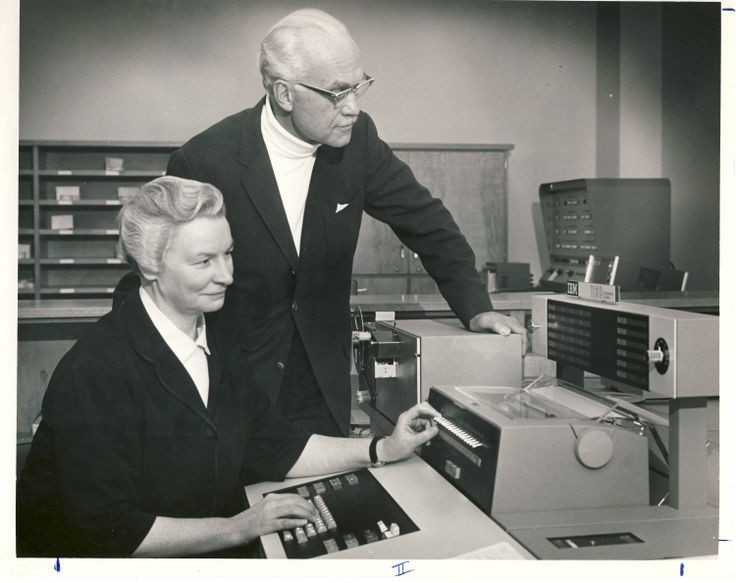

A pioneira de sua área
Pouco sabe-se sobre a vida de Mary Kenneth Keller. Das raras informações obtidas sobre sua
trajetória pessoal e profissional, a mais precisa trata-se de seu feito histórico, deixando à
margem de dúvidas suas particularidades. Mesmo com a escassa onte de informações, essa mulher maravilhosa tornou-se conhecida ao público pela sua grandeza na história do desenvolvimento tecnológico em decorrência de sua
inteligência.
Em 1932, Keller entrou para a ordem das Irmãs de Caridade da Abençoada Virgem Maria (Dubuque,
Iowa), consagrando-se freira através de seus votos em 1940, contudo, não parou sua trajetória
por aí.
Provando que religião e ciência não são incompatíveis, em 1943, Irmã Mary Kenneth Keller
conquista seu bacharel em Ciências com ênfase em Matemática e, posteriormente, seu mestrado em
Matemática e Física, no ano de 1953, ambos pela Universidade DePaul, uma instituicação católica.

Cinco anos mais tarde, em 1958, Irmã Mary Kenneth Keller começou a trabalhar na oficina de
ciência da computação da Fundação Nacional de Ciência, localizado na Darthmouth College. Fazendo
parte de um ambiente masculino, participou do desenvolvimento da linguagem de programação BASIC
(anacrônico para Beginner's All-purpose Symbolic Instruction Code), esta que foi utilizada por
anos para fins didáticos até que fosse substuitída por outra mais segura.
Contudo, o fato que a fez conhecida veio só mais tarde, no ano de 1965, quando Irmã Mary Kenneth
Keller foi a primeira mulher ter um doutorado em Ciências da Computação, consigo através da
Universidade de Wisconsin-Madison em decorrência da sua tese intitulada "Inductive Inference on
Computer Generated Patterns" (em português, "Inferência indutiva em padrões gerados por
computador"). Além disso, junto de Irving Tang, foram os primeiros doutores da área em todo o
território norte-americano.
Por acreditar no potencial dos computadores em abranger o acesso à informação e promover educação de qualidade para todos, a fim do desenvolvimento humano, foi seguindo seguindo seus ideais que fundou após o seu doutorado, no mesmo ano, um departamento de ciências da computação na Universidade Clarke, em Iowa, atuando em sua direção por 20 anos até o fim de sua vida. Atualmente, a Univeridade Clarke possui o Centro de Serviços de Computação e Informação Keller, criado pelos serviços de telecomunicação e computação que ela ofertou aos alunos, funcionários e professores. Outra ação representativa de sua importância, são ofertadas bolsas de estudos em Ciência da Computação em nome da Irmã Mary Kenneth Keller na mesma universidade.
Sua luta pela igualdade e perseverança na mudança no área da informática, além de válida nos dias atuais onde encontramos cenários muitos semelhantes apesar do passar dos anos, era a mior parte de sua história e que culminou em seu marco. Militante da inclusão de mais mulheres na computação fizeram com que a mesma fosse pioneira e sua crença no poder da educação a fizeram ajudar a fundar iniciativas para levar a educação mais longe.
Seu falecimento ocorreu em 10 de junho de 1985, aos 71 anos, mas seu legado será eterno tanto na presença de sua conquista na história ao ser contada, assim como, em ações criadas como homenagens e de modo a manter o reconhecimento de sua grandeza.